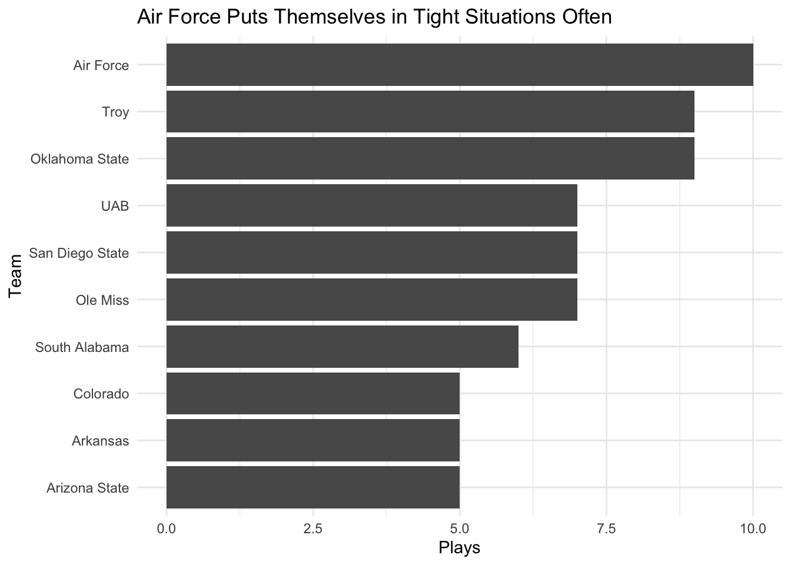

# A tibble: 1 × 5
plays min max median yards_gainedAvg
<int> <dbl> <dbl> <dbl> <dbl>
1 1401 -16 42 4 5.30
In the first go-around of the code, it just gave me an average of 6 which to me didn’t seem entirely right. Added in min and max and saw that the max was 79 yards which means there are some outlier plays. Added in a Median which gave a more accurate gain of yards.
From there, I added in a filter of less than 50 yards. This gave me an average of 5 yards but still the same median. However, the max is 42. Which I think is more reasonable.
I then added in plays count and it said there are 1,401 plays where third and six are less than 50 yards. I think this is a better model than just looking at just the average because now it shows that out of 11,655 plays only 1,401 are third and six plays.
# A tibble: 1 × 5
plays min max median yards_gainedAvg
<int> <dbl> <dbl> <dbl> <dbl>
1 2 -1 15 7 7
Looking at the fact there are only 2 times that Maryland has been in a third and six situation where they were on the opponents territory, it basically looks like that Maryland doesn’t find themselves in these situations a lot. Which would make sense that what happened against Illinois…happened.
# A tibble: 21 × 2
pos_team plays
<chr> <int>
1 Air Force 10
2 Oklahoma State 9
3 Troy 9
4 Ole Miss 7
5 San Diego State 7
6 UAB 7
7 South Alabama 6
8 Arizona State 5
9 Arkansas 5
10 Colorado 5
# ℹ 11 more rows
I don’t know if I’m right but I think R is seeing that some teams have the same amount of plays so it’s thinking that they are also in the top 10. But I’m not sure why it’s showing me more than ten teams.
Code
library(ggplot2)library(scales)
Attaching package: 'scales'
The following object is masked from 'package:purrr':
discard
The following object is masked from 'package:readr':
col_factor
ggplot() +geom_bar(data=top10, aes(x=reorder(pos_team, plays),weight=plays)) +scale_y_continuous(labels=comma) +labs(title="Air Force Puts Themselves in Tight Situations Often", x="Team", y="Plays") +theme_minimal() +coord_flip()

So, in conclusion, I found that Air Force ends up being the team that has run the most amount of third and six plays. Seemlingly, it means that Air Force also knows how to run the ball more and knows how to get themselves out of those situations. It’s interesting because ESPN just ran an article about how Air Force is the best school in Colorado.
Oddly enough, Prime Time and his team is also on this list. For them, I don’t think this is a good thing considering they have had many inconsistencies when it comes to running the ball. Look at the Stanford game when they went into double overtime and basically gave that game away last minute. Maybe Colorado would benefit in NOT finding themselves in these situations. Whereas, their state neighbor has actually benefit from those third and six plays.